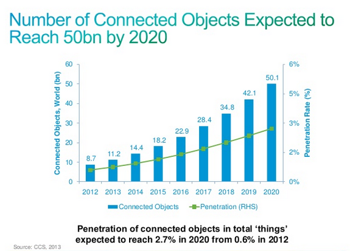

I am not a doctor just play one on the computer
*Devices can publish many times a second
**Real time means real time not kinda real time
Examples: temp, gyroscope, lighting, footfalls, windows and door, sleep monitors AND mobile phones
"Message Queuing Telemetry Transport"
M2M connectivity protocol
Open Sourced by IBM
Suitable for low bandwidth and low powered devices
Extremely lightweight
St Jude Medical uses MQTT with its heart pacemakers to send cardio and pacemaker data for their clinicians remotely monitoring at home patients. This is done to provide the patients a better quality of life and reduce the amount of patient travel for check-ups.
(require '[clojurewerkz.machine-head.client :as mh])
(def conn (mh/connect "tcp://mqtt.opensensors.io:1883" (mh/generate-id)))
(defn over-pollution [limit]
"give me a limit and if pollution levels goes over that tell me about it"
(mh/subscribe conn ["Pollution"]
(fn [topic meta payload]
(let [pollution (Integer. (String. payload "UTF-8"))]
(if (> pollution limit)
(println
(format "Danger pollution level is currently at %s over the limit of %s" pollution limit)))))))
(mh/publish conn "Pollution" (str 100))
Understand what is normal for each individual
unless enriched with context
yavrha/node0/address 00011
yavrha/node0/data0 0
yavrha/node0/data1 1
yavrha/node0/data2 2
yavrha/node0/data3 0
yavrha/node0/msgid 2
Realiable Messaging Service
Queries on distributed databases we know already
Real Time Analytics using Storm
Enrich the data to give it context
What happens when we scale to whole cities
Publish data for free when using an open data licence
Enable Developers to build services using technology they already know
The scale of the challenge is too big for any one of us to solve
Offer a number of available services
140 developers over a weekend
Challenge: "Make the lives of the people of the City of Westminster better"
“Sensor device > Data Provider > people > DB > people > ETL > people> CSV > public entity> people > ETL> IT Vendor> DW > people > CSV > Sharepoint > Dropbox > and… us !!!”
John Gall, Systemantics: How Systems Work and Especially How They Fail
"A complex system that works is invariably found to have evolved from a simple system that worked. The inverse proposition also appears to be true: A complex system designed from scratch never works and cannot be made to work. You have to start over, beginning with a working simple system."
More Open Hardware
Multi purpose hardware
Interoperable Systems
Paraphrasing Sir Tim Berners-Lee
If you open your data people will use it in ways that you never expected
Thank you
@yoditstanton
opensensors.IO